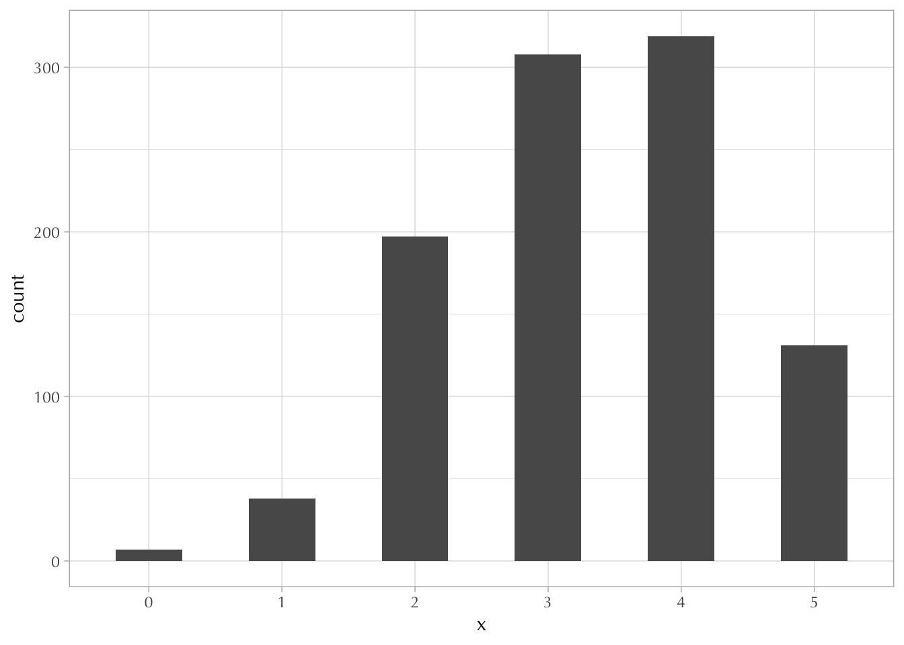

14 Solutions 5
14.1 Probability
14.1.1 Exercise
dbinom()
[1] 0.6666667[1] 0.3333333[1] 0 0 0 0pbinom()
[1] 0 0 0[1] 0.3333333[1] 1[1] 1 1 1 1rbinom()
14.1.2 Exercise
\[ \Omega = \begin{Bmatrix} T, T, T, T \\ \hline H, T, T, T \\ T, H, T, T \\ T, T, H, T \\ T, T, T, H \\ \hline H, H, T, T \\ H, T, H, T \\ H, T, T, H \\ T, H, H, T \\ T, H, T, H \\ T, T, H, H \\ \hline T, H, H, H \\ H, T, H, H \\ H, H, T, H \\ H, H, H, T \\ \hline H, H, H, H \end{Bmatrix} \]
14.1.3 Exercise
\[ \begin{align} \Omega = \begin{Bmatrix} T, T, T, T \\ \hline H, T, T, T \\ T, H, T, T \\ T, T, H, T \\ T, T, T, H \\ \hline H, H, T, T \\ H, T, H, T \\ H, T, T, H \\ T, H, H, T \\ T, H, T, H \\ T, T, H, H \\ \hline T, H, H, H \\ H, T, H, H \\ H, H, T, H \\ H, H, H, T \\ \hline H, H, H, H \end{Bmatrix} &&\text{becomes} &&X = \begin{Bmatrix} 0 \\1 \\ 2 \\ 3 \\ 4 \end{Bmatrix} \end{align} \]
There is 1 way of getting \(X = 0\) , 4 ways of getting \(X = 1\), 6 ways of getting \(X = 2\), 4 ways of getting \(X = 3\), and 1 way of getting \(X = 4\).
What is the probability that \(X = 2\)?
\[ \Pr(X = 2) = \frac{6}{16} = 0.375 \]
Use the correct R function to calculate the probability that \(X \leq 1\) ?
\[ \Pr(X \leq 1) = \Pr(X = 0) + \Pr(X = 1) = \frac{1 + 4}{16} = 0.3125 \]
14.1.4 Exercise
Code

[1] 0.516Note. You can get sophisticated in finding even numbers by using the “modulus” operator.
Actually, I just discovered that zero is technically an even number 🤯
14.1.5 Exercise
\[ \Pr\bigg(X = 2 \mid p =\frac{1}{3}, n =4 \bigg) = 6 \times \bigg(\frac{1}{3}\bigg)^2 \times \bigg(\frac{2}{3}\bigg)^2 = 0.2962963 \]
14.1.6 Exercise
dbinom()
[1] 6.969172e-08 2.090752e-06 2.927052e-05 2.536779e-04 1.522067e-03
[6] 6.697095e-03 2.232365e-02 5.740368e-02 1.148074e-01 1.785892e-01
[11] 2.143071e-01 1.948246e-01 1.298831e-01 5.994603e-02 1.712744e-02
[16] 2.283658e-03 [1] 6.969172e-08 2.090752e-06 2.927052e-05 2.536779e-04 1.522067e-03
[6] 6.697095e-03 2.232365e-02 5.740368e-02 1.148074e-01 1.785892e-01
[11] 2.143071e-01 1.948246e-01 1.298831e-01 5.994603e-02 1.712744e-02
[16] 2.283658e-03pbinom()
[1] 6.969172e-08 2.160443e-06 3.143097e-05 2.851088e-04 1.807176e-03
[6] 8.504271e-03 3.082792e-02 8.823160e-02 2.030389e-01 3.816282e-01
[11] 5.959352e-01 7.907598e-01 9.206429e-01 9.805889e-01 9.977163e-01
[16] 1.000000e+00 [1] 6.969172e-08 2.160443e-06 3.143097e-05 2.851088e-04 1.807176e-03
[6] 8.504271e-03 3.082792e-02 8.823160e-02 2.030389e-01 3.816282e-01
[11] 5.959352e-01 7.907598e-01 9.206429e-01 9.805889e-01 9.977163e-01
[16] 1.000000e+0014.2 Likelihood
14.2.1 Exercise
Code
# A tibble: 1 × 4
prob like clike_raw clike_normalized
<dbl> <dbl> <dbl> <dbl>
1 0.588 0.0175 20.3 0.975The value of clike_normalized gives the chances that prob is equal to or less than 0.588. To answer the question I just need to subtract 1 from that.